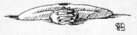

Akıl Tutulması - Max Horkheimer
AKIL TUTULMASI ve Orhan Koçak’ın kitaba önsözü, Horkheimer ve Frankfurt Enstitüsü’nü konu alan incelemesi, okurdan gördüğü ilgiyle beşinci basımına ulaştı. Bir Metis klasiği haline gelen kitap, Frankfurt Enstitüsü’nün ve kurucusu Max Horkheimer’in (1895-1973) temel yapıtlarındandır. Kitap, yazarın ülkesini terk etmek zorunda kaldığı İkinci Dünya Savaşı yıllarında, ABD’de, Avrupa felsefe geleneğine yabancı Amerikalı okurların düzeyi göz önünde tutularak ve İngilizce olarak yazılmıştır. Belki de bu yüzden, “zorluğuyla” ünlü Frankfurt okulu kuramcılarının en açık, en “kolay” metinlerinden biridir.
Horkheimer Akıl Tutulmasında ABD kültürünün egemen felsefesi olan pragmatizmi ve onun temelinde yatan pozitivizmi eleştirirken, Batı düşüncesinde Akıl kavramının tarihini, önce hurafeye ve mitosa karşı mücadelesini, ardından kendisinin de bir hurafeye dönüşmesini tartışmaktadır. Aydınlanmanın mitos içindeki kökenleri ve giderek yeni bir mitoloji haline gelişi, insanın doğa üzerindeki egemenliğinin tahripkâr boyutu, Faşizmin Batı Aklının tarihi içindeki yeri, bireyciliğin sonucunda bireyin ölümü, işçi hareketinin imkânları ve direnme gücü: Horkheimer’in bir toptan yıkım döneminin getirdiği perspektif açısından gözden geçirdiği temel sorunlar...

Metis Tarih Toplum Felsefe ISBN 975-342-189-3
Metis Yayınları İpek Sokak 9,80060 Beyoğlu, İstanbul
AKIL TUTULMASI Max Horkheimer
Orijinal Adı: The Eclipse of Reason © Önsöz, "Horkheimer ve Frankfurt Okulu", Orhan Koçak, 1986 ©Metis Yayınları, 1986
Birinci Basım: Ekim 1986 Dördüncü Basım: Haziran 1998
Yayına Hazırlayan: Müge Gürsoy Sökmen
Kapak Deseni: Selçuk Demirel Kapak Tasarımı: Semih Sökmen Baskı Öncesi Hazırlık: Sedat Ateş
Film: Doruk Grafik Kapak ve İç Baskı: Yaylacık Matbaacılık Ltd. Cilt: Sistem Mücellithanesi
ISBN 975-342-189-3
Max Horkheimer
AKIL TUTULMASI
İngilizce'den Çeviren ve Önsöz:
HORKHEİMER VE FRANKFURT OKULU
Orhan Koçak
METİS YAYINLARI